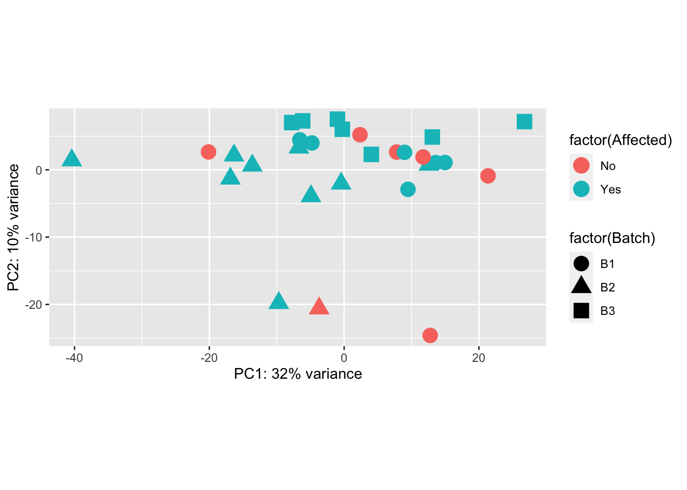

Differential Gene Expression (DGE) Analysis
Last updated: 2023-06-28
Checks: 7 0
Knit directory: mecfs-dge-analysis/
This reproducible R Markdown analysis was created with workflowr (version 1.7.0). The Checks tab describes the reproducibility checks that were applied when the results were created. The Past versions tab lists the development history.
Great! Since the R Markdown file has been committed to the Git repository, you know the exact version of the code that produced these results.
Great job! The global environment was empty. Objects defined in the global environment can affect the analysis in your R Markdown file in unknown ways. For reproduciblity it’s best to always run the code in an empty environment.
The command set.seed(20230618) was run prior to running
the code in the R Markdown file. Setting a seed ensures that any results
that rely on randomness, e.g. subsampling or permutations, are
reproducible.
Great job! Recording the operating system, R version, and package versions is critical for reproducibility.
Nice! There were no cached chunks for this analysis, so you can be confident that you successfully produced the results during this run.
Great job! Using relative paths to the files within your workflowr project makes it easier to run your code on other machines.
Great! You are using Git for version control. Tracking code development and connecting the code version to the results is critical for reproducibility.
The results in this page were generated with repository version 3009016. See the Past versions tab to see a history of the changes made to the R Markdown and HTML files.
Note that you need to be careful to ensure that all relevant files for
the analysis have been committed to Git prior to generating the results
(you can use wflow_publish or
wflow_git_commit). workflowr only checks the R Markdown
file, but you know if there are other scripts or data files that it
depends on. Below is the status of the Git repository when the results
were generated:
Ignored files:
Ignored: .DS_Store
Ignored: .Rhistory
Ignored: .Rproj.user/
Ignored: data/.DS_Store
Ignored: output/batch-correction-limma/
Unstaged changes:
Deleted: Rplot.png
Deleted: data/CPAM0066_PCS_slides_NM_001173543.1(BANP) c.1372G-A, p.Val458Met.pptx
Note that any generated files, e.g. HTML, png, CSS, etc., are not included in this status report because it is ok for generated content to have uncommitted changes.
These are the previous versions of the repository in which changes were
made to the R Markdown (analysis/analysis.Rmd) and HTML
(docs/analysis.html) files. If you’ve configured a remote
Git repository (see ?wflow_git_remote), click on the
hyperlinks in the table below to view the files as they were in that
past version.
| File | Version | Author | Date | Message |
|---|---|---|---|---|
| Rmd | 3009016 | sdhutchins | 2023-06-28 | Add gprofiler. |
| Rmd | dbea49f | sdhutchins | 2023-06-27 | Add analysis and update site |
| html | dbea49f | sdhutchins | 2023-06-27 | Add analysis and update site |
| html | 19c181e | sdhutchins | 2023-06-23 | Build site. |
| Rmd | 13c1acc | sdhutchins | 2023-06-23 | wflow_publish("analysis/") |
| html | 6133d80 | sdhutchins | 2023-06-23 | Build site. |
| Rmd | df39c69 | sdhutchins | 2023-06-23 | wflow_publish("analysis/") |
DGE Analysis Setup
Ensure you have all necessary libraries installed.
At a later date, renv will be integrated to ensure
reproducibility of this analysis.
library(tidyverse) # Available via CRAN
library(DESeq2) # Available via Bioconductor
library(RColorBrewer) # Available via CRAN
library(pheatmap) # Available via CRAN
library(genefilter) # Available via Bioconductor
library(limma) # Available via Bioconductor
library(gprofiler2) # Available via CRAN
library(biomaRt) # Available via Bioconductor
library(plotly) # Available via CRANData Import
We will be importing counts data from the star-salmon pipeline and our metadata for the project which is hosted on Box. This also ensures data is properly ordered by sample id.
counts <- read_tsv("data/star-salmon/salmon.merged.gene_counts_length_scaled.tsv")
# Use first column (gene_id) for row names
counts = data.frame(counts, row.names = 1)
counts$Ensembl_ID = row.names(counts)
drop = c("Ensembl_ID","gene_name")
gene_names = counts[,drop]
counts = counts[ , !(names(counts) %in% drop)] # remove both columns
# Import metadata
sample_metadata <- read_csv("data/MECFS_RNAseq_metadata_CORRECTED.csv")
row.names(sample_metadata) <- sample_metadata$RNA_Samples_id
# Order sample_metadata
sample_metadata <- arrange(sample_metadata, RNA_Samples_id)
# Check that data is ordered properly
all(rownames(sample_metadata) %in% colnames(counts)) [1] TRUE[1] TRUEDESeq2 Analysis
sample_metadata$Family = factor(sample_metadata$Family)
sample_metadata$Affected = factor(sample_metadata$Affected)
sample_metadata$Batch = factor(sample_metadata$Batch)
sample_metadata$Gender = factor(sample_metadata$Gender)
# Account for Family later but batch is accounted for
dds <- DESeqDataSetFromMatrix(countData = round(counts), colData = sample_metadata, design = ~ Batch + Affected)
# Pre-filtering: Keep only rows that have atleast 10 reads total
keep = rowSums(counts(dds)) >= 10
dds = dds[keep,]
# Run DESeq function
dds = DESeq(dds)
head(counts(dds, normalized=TRUE)) LW001974 LW001975 LW001976 LW001977
ENSG00000000003.15 6.283344 2.05296 7.223942 4.264822
ENSG00000000419.14 921.557182 1043.92997 850.017210 859.361676
ENSG00000000457.14 1114.246411 746.25082 829.549373 916.936776
ENSG00000000460.17 234.578192 189.89876 193.842452 328.391311
ENSG00000000938.13 12201.207645 11118.82929 15551.943765 17490.035904
ENSG00000000971.17 83.777926 130.36294 167.354663 197.248027
LW001978 LW001979 LW001980 LW001981
ENSG00000000003.15 3.565091 14.47998 4.573315 10.46587
ENSG00000000419.14 910.286661 866.16626 868.015180 1118.80153
ENSG00000000457.14 1100.424867 971.47523 1048.203789 1003.67696
ENSG00000000460.17 294.714219 276.43604 185.676587 252.22747
ENSG00000000938.13 10116.540921 10099.13001 18749.676681 21708.30816
ENSG00000000971.17 553.777525 143.48347 222.263107 216.64352
LW001982 LW001983 LW001984 LW001985
ENSG00000000003.15 17.45822 6.161279 5.718447 9.434676
ENSG00000000419.14 979.40627 1059.740056 924.754609 919.356806
ENSG00000000457.14 1104.23256 635.844033 901.880820 939.274457
ENSG00000000460.17 374.47887 144.173938 303.894624 263.122644
ENSG00000000938.13 19973.95218 23219.397520 19682.078435 13836.477178
ENSG00000000971.17 107.36807 27.109629 86.593629 116.361010
LW001986 LW001987 LW001988 LW001989 LW001990
ENSG00000000003.15 14.3010 8.261848 20.80204 11.32375 7.592455
ENSG00000000419.14 894.8338 840.642993 896.56804 949.93645 832.458476
ENSG00000000457.14 1046.6967 747.008720 897.60814 859.34649 1079.755586
ENSG00000000460.17 305.7689 232.708707 200.73971 223.95853 264.651294
ENSG00000000938.13 14919.3442 14147.037031 13752.23045 14215.07557 13223.345284
ENSG00000000971.17 222.6869 227.200809 160.17573 163.56522 143.172011
LW001991 LW001992 LW001993 LW001994
ENSG00000000003.15 5.130748 3.925784 7.688938 12.43332
ENSG00000000419.14 1002.206201 917.324885 997.639691 920.06541
ENSG00000000457.14 903.866855 1092.676575 897.683498 885.63469
ENSG00000000460.17 217.201685 378.183869 149.934289 273.53296
ENSG00000000938.13 14667.099624 8978.268242 13184.606244 15375.23032
ENSG00000000971.17 149.646830 294.433808 152.817641 124.33316
LW001995 LW001996 LW001997 LW001998 LW001999
ENSG00000000003.15 4.865262 13.74314 6.723075 11.82344 3.302019
ENSG00000000419.14 1119.010269 992.12394 808.113622 1212.74707 893.746405
ENSG00000000457.14 904.938740 897.23081 935.852048 728.83058 989.504949
ENSG00000000460.17 515.717776 293.84146 404.729118 143.57034 159.597572
ENSG00000000938.13 15497.481354 14288.28620 9146.071308 8941.89828 16707.114147
ENSG00000000971.17 229.478193 126.96045 208.415327 369.06021 184.913049
LW002000 LW002001 LW002080
ENSG00000000003.15 10.49324 9.01276 4.661212
ENSG00000000419.14 1437.57367 736.47124 918.258773
ENSG00000000457.14 1143.76299 987.54098 1041.780892
ENSG00000000460.17 339.71860 350.21010 205.093330
ENSG00000000938.13 8890.39630 10409.73770 12261.318282
ENSG00000000971.17 247.90276 133.90386 209.754542[1] "Intercept" "Batch_B2_vs_B1" "Batch_B3_vs_B1"
[4] "Affected_Yes_vs_No"# Normalize gene counts for differences in seq. depth/global differences
counts_norm = counts(dds, normalized=TRUE)Data transformation and visualization
Perform count data transformation by variance stabilizing transformation (vst) on normalized counts.
Batch correction, transformation and plotting
counts_vst = assay(vsd)
write.csv(counts_vst, file="output/counts_vst.csv")
mm = model.matrix(~ Family + Affected, colData(vsd))
counts_vst_limma = limma::removeBatchEffect(counts_vst, batch=vsd$Batch, design=mm)Coefficients not estimable: batch2 Sample distances heatmap
sampleDists = dist(t(assay(vsd_limma)))
sampleDistMatrix = as.matrix(sampleDists)
rownames(sampleDistMatrix) = paste(vsd_limma$Batch, vsd_limma$Family, sep=" | ")
colnames(sampleDistMatrix) = paste(vsd_limma$RNA_Samples_id, vsd_limma$Family, sep=" | ")
colors = colorRampPalette(rev(brewer.pal(9, "Blues")))(255)
pheatmap(sampleDistMatrix, clustering_distance_rows=sampleDists, clustering_distance_cols=sampleDists, col=colors)
| Version | Author | Date |
|---|---|---|
| 6133d80 | sdhutchins | 2023-06-23 |
Principal Components Analysis
pcaData = plotPCA(vsd, intgroup=c("Batch", "Family", "Affected"), returnData=TRUE)
percentVar = round(100 * attr(pcaData, "percentVar"))
p1 <- ggplot(pcaData, aes(PC1, PC2, shape=factor(Batch), fill=factor(Affected), color=factor(Family))) + geom_point(size=5) + xlab(paste0("PC1: ",percentVar[1],"% variance")) + ylab(paste0("PC2: ",percentVar[2],"% variance")) + coord_fixed()
p1
ggplot(pcaData, aes(PC1, PC2, shape=factor(Batch), color=factor(Affected))) +
geom_point(size=5) + xlab(paste0("PC1: ",percentVar[1],"% variance")) + ylab(paste0("PC2: ",percentVar[2],"% variance")) + coord_fixed()
Heatmap of top 50 & top 100 genes
This is a heatmap for 50 genes with the highest variance across samples.
topVarGenes = head(order(-rowVars(assay(vsd))),50)
mat = assay(vsd_limma)[ topVarGenes, ]
mat = mat - rowMeans(mat)
df = as.data.frame(colData(vsd)[,c("Batch", "Affected")])
pheatmap(mat, annotation_col=df, fontsize = 5)
| Version | Author | Date |
|---|---|---|
| dbea49f | sdhutchins | 2023-06-27 |
This is a heatmap of the top 100 genes with the highest variance across samples.
topVarGenes = head(order(-rowVars(assay(vsd_limma))),100)
mat = assay(vsd_limma)[ topVarGenes, ]
mat = mat - rowMeans(mat)
df = as.data.frame(colData(vsd_limma)[,c("Batch", "Family", "Affected")])
pheatmap(mat, annotation_col=df, fontsize = 6)
| Version | Author | Date |
|---|---|---|
| dbea49f | sdhutchins | 2023-06-27 |
Comparison/Contrast of Affected_Yes_vs_No
res_aff_vs_unaff = results(dds, contrast=c("Affected", "Yes", "No"))
res_aff_vs_unaff= res_aff_vs_unaff[order(res_aff_vs_unaff$padj),]
summary(res_aff_vs_unaff)
out of 29624 with nonzero total read count
adjusted p-value < 0.1
LFC > 0 (up) : 34, 0.11%
LFC < 0 (down) : 30, 0.1%
outliers [1] : 162, 0.55%
low counts [2] : 6, 0.02%
(mean count < 0)
[1] see 'cooksCutoff' argument of ?results
[2] see 'independentFiltering' argument of ?resultswrite.csv(res_aff_vs_unaff, file="output/res_aff_vs_unaff.csv")
res_aff_vs_unaff_df = as.data.frame(res_aff_vs_unaff)
res_aff_vs_unaff_05 = subset(res_aff_vs_unaff_df, padj < 0.05) topgenes_byensemblid = head(rownames(res_aff_vs_unaff_05),50)
topgenes_aff_vs_unaff_05 = assay(vsd_limma)[topgenes_byensemblid,]
topgenes_aff_vs_unaff_05 = topgenes_aff_vs_unaff_05 - rowMeans(topgenes_aff_vs_unaff_05)
# Convert ensemblids
ensemblids <- topgenes_byensemblid
rownames(topgenes_aff_vs_unaff_05) <- gene_names$gene_name[match(ensemblids, gene_names$Ensembl_ID)]
topgenes_aff_vs_unaff_05[order(row.names(topgenes_aff_vs_unaff_05)), ] LW001974 LW001975 LW001976 LW001977 LW001978
BEX1 0.084174580 0.084174580 0.084174580 0.084174580 -0.61844502
CBX3P2 -0.283866842 0.005489020 -0.190112533 0.615925081 0.22064986
CD248 -0.045850497 -1.415183689 0.026783485 -0.647950124 0.63460154
CDR2-DT 0.501888863 -0.192817939 0.280729197 -0.192817939 -0.11685349
DEFA1 2.136607211 4.071634333 2.136607211 5.865657558 -7.71372983
ENSG00000142539 1.846204345 -0.346184604 -0.346184604 -0.346184604 0.18220242
ENSG00000224610 1.113746895 0.079203425 0.547842099 0.139660090 -0.39637477
ENSG00000254732 0.308001320 2.061481854 0.308001320 1.718772217 -0.72545958
ENSG00000259132 -0.356893561 -0.356893561 -0.356893561 1.113089311 0.20337247
ENSG00000265337 0.111884250 0.894070645 0.111884250 0.937992351 -0.38745996
ENSG00000269693 -0.072759550 -0.072759550 -0.072759550 2.431753005 -0.43054706
ENSG00000273026 -0.245766347 0.242948195 -0.245766347 0.070125079 -0.12787269
ENSG00000284554 -0.198860158 -0.198860158 -0.198860158 -0.198860158 -0.43924788
ENSG00000285505 0.002530756 0.002530756 0.002530756 0.002530756 -0.58187629
ENSG00000285952 0.015144387 0.015144387 0.015144387 0.015144387 -0.07269306
ENSG00000289694 1.703168441 1.703168441 1.703168441 1.703168441 -7.42087389
F8A2 -0.825295075 -0.825295075 -0.825295075 -0.825295075 2.69063206
FOSL1 -0.010011828 0.478702714 -0.010011828 0.435842677 -0.85623689
FSCN2 0.582589316 -0.082190517 0.408474089 -0.321311875 0.36044062
GRAMD4 -0.463702485 0.670436790 -0.300319986 0.016157248 -0.15117289
IGKV6-21 0.011579301 -0.303851390 -0.104433372 -0.237272997 0.38640908
KCNQ5 -0.468219369 -0.524160750 0.446092771 -0.839538384 1.49409854
KLHL4 0.096196227 0.907168301 0.096196227 0.893007998 -0.61811011
LRRN3 -0.444166174 -2.105477365 0.090154017 -1.303858781 0.83877085
MPPED2 0.518179709 -0.015560103 0.041642762 -0.853515814 0.51925976
ODF3 0.671726366 -0.228176934 0.009392474 -0.228176934 0.15092548
PIK3R3 -0.271136262 0.710754798 0.226625636 0.691701019 -0.39386173
RNU1-3 1.524733140 4.548548231 1.524733140 1.524733140 -1.12323188
RNVU1-18 0.280214615 3.270239125 0.280214615 0.280214615 -0.58765760
SLC4A10 -1.146638037 -1.306420654 0.800180055 -0.338942737 1.07085746
SNTG2 0.831023536 -0.264974290 0.329457899 -0.464837439 0.61661118
STEAP1B 0.709934704 -0.372260329 0.743289875 -0.095043316 0.23577558
TBC1D3F -0.349340131 -0.349340131 -0.349340131 -0.349340131 -0.31094458
TIPARP-AS1 -0.131703217 0.808795891 -0.131703217 0.533826188 -0.26817295
TMEM37 -0.648631462 -0.648631462 0.392286471 -0.648631462 0.15696859
VMO1 -0.496517839 1.380902461 0.082176290 1.043301903 -0.68377774
VWA3A -0.020262004 0.870959340 -0.020262004 0.477728553 -0.20523230
XGY2 -0.047397034 -0.047397034 -0.047397034 -0.047397034 -0.17447399
ZNF683 -0.547711638 0.702628376 0.360894933 0.636247448 0.76583626
LW001979 LW001980 LW001981 LW001982 LW001983
BEX1 -0.95186622 0.084174580 0.4397339854 -0.43384582 1.685061956
CBX3P2 -0.13721452 0.079740762 0.1179529538 -0.02273535 0.476653231
CD248 1.51637075 -0.677659475 -0.3742382975 0.08086894 -1.530328961
CDR2-DT -0.09943987 0.457211092 0.2184621472 0.02835961 -0.192817939
DEFA1 -7.71372983 2.136607211 4.9351376463 1.94760605 2.136607211
ENSG00000142539 0.18220242 -0.346184604 -0.0819910905 -0.08199109 -0.346184604
ENSG00000224610 -0.27452919 0.322861777 -0.0697062897 0.24751174 -0.358330467
ENSG00000254732 -1.13061426 0.308001320 0.2676934716 0.01108392 1.679283739
ENSG00000259132 0.20337247 -0.356893561 -0.0767605459 -0.07676055 -0.356893561
ENSG00000265337 -0.79536521 0.111884250 -0.3417404823 -0.05581094 0.111884250
ENSG00000269693 -0.43054706 -0.072759550 -0.2516533042 -0.25165330 -0.072759550
ENSG00000273026 -0.28739542 -0.038643871 0.0509934267 0.01293696 0.576565838
ENSG00000284554 -0.43924788 2.485510653 -0.3190540174 -0.31905402 -0.198860158
ENSG00000285505 -0.58187629 0.002530756 -0.2896727675 -0.28967277 0.002530756
ENSG00000285952 -0.07269306 0.015144387 -0.0287743356 -0.02877434 0.015144387
ENSG00000289694 -7.42087389 1.703168441 2.1473360271 2.85600782 5.319754046
F8A2 -0.04895021 2.392664897 -0.4371226449 -0.43712264 -0.825295075
FOSL1 -0.59731506 -0.010011828 -0.2381542851 0.08412286 1.042544713
FSCN2 0.12371730 0.345284214 -0.3238577747 -0.28999243 -0.501208387
GRAMD4 0.01079084 0.083697218 -0.3691514155 -0.46585165 0.612104207
IGKV6-21 0.38109739 1.081902643 -0.1863383303 0.03344719 -0.683127501
KCNQ5 1.05987635 0.480926673 -0.0674836674 -0.45050489 -2.141418617
KLHL4 -0.42497762 0.096196227 0.0627955724 0.02473911 0.770596894
LRRN3 2.15392330 -0.981871656 -0.1734605610 -0.13589955 -2.170085508
MPPED2 0.41011850 -0.826831459 -0.4458550557 -0.14749500 -0.999683136
ODF3 -0.31956566 -0.228176934 -0.0523422483 0.39186840 -0.228176934
PIK3R3 -0.75566195 -0.094623927 -0.3627876819 0.25905387 0.604316787
RNU1-3 -4.91098434 1.524733140 1.6932011511 -1.69312560 4.487558816
RNVU1-18 -0.55368308 0.280214615 1.3220687107 -2.02760198 2.403672168
SLC4A10 1.27760583 -0.780361264 0.5015448498 -0.22019291 -1.239471088
SNTG2 0.33778118 -0.547994875 -0.0661206644 -0.27748139 -0.213959132
STEAP1B 0.01001002 0.541844524 -0.0005006976 0.32219588 -1.359261566
TBC1D3F -0.31094458 -0.349340131 1.5731932722 -0.04421281 -0.349340131
TIPARP-AS1 -0.41739720 -0.131703217 -0.0574680918 0.01819818 0.690628968
TMEM37 0.58612720 0.001397569 0.3765261512 -0.24583143 -0.648631462
VMO1 -0.39525757 -0.496517839 -0.5398897323 -0.24973341 0.038440307
VWA3A -0.22750772 -0.020262004 -0.0172836148 -0.19788710 -0.020262004
XGY2 -0.17447399 -0.047397034 -0.1109355126 -0.11093551 -0.047397034
ZNF683 -0.20569521 0.319673757 -0.6549798484 -0.92105630 -0.083416129
LW001984 LW001985 LW001986 LW001987 LW001988
BEX1 0.002559567 0.667361734 0.512360673 0.29977707 0.084174580
CBX3P2 0.111547908 0.422436787 -0.058001489 -0.19466073 -0.610563416
CD248 -0.697533515 -0.812514960 0.192271324 -0.57668229 0.557703486
CDR2-DT -0.125785166 -0.192817939 0.035288012 0.07932624 -0.192817939
DEFA1 -2.788561309 2.136607211 5.357511798 3.17222851 2.136607211
ENSG00000142539 -0.081991090 -0.346184604 -0.081991090 -0.08199109 -0.346184604
ENSG00000224610 -0.410835162 -0.045092697 -0.080497753 -0.10927053 0.023439532
ENSG00000254732 -0.399488019 0.308001320 -0.835893403 0.30011055 0.308001320
ENSG00000259132 -0.076760546 -0.356893561 -0.076760546 -0.07676055 -0.356893561
ENSG00000265337 0.094664902 0.111884250 0.161629588 0.13197471 0.111884250
ENSG00000269693 -0.251653304 -0.072759550 -0.251653304 -0.25165330 -0.072759550
ENSG00000273026 0.086925510 0.196357253 0.080382896 -0.07985972 -0.024923348
ENSG00000284554 -0.319054017 -0.198860158 -0.319054017 1.87599086 -0.198860158
ENSG00000285505 -0.289672767 0.002530756 -0.289672767 0.62925743 0.002530756
ENSG00000285952 0.586087783 0.015144387 -0.028774336 -0.02877434 0.015144387
ENSG00000289694 2.264255822 1.703168441 3.030884521 2.03993342 1.703168441
F8A2 -0.437122645 -0.825295075 -0.437122645 -0.43712264 1.436760283
FOSL1 0.063724703 0.211697804 -0.114658143 0.06714897 0.371758171
FSCN2 -0.403400644 -0.592421899 -0.119353393 0.15141731 0.002197096
GRAMD4 0.365989335 0.624952849 -0.287445816 0.08988092 -0.005351762
IGKV6-21 -0.303560317 -0.683127501 0.271175133 0.03714131 -0.683127501
KCNQ5 -0.763298534 -1.509680754 0.020349784 -0.42941102 -0.126566425
KLHL4 -0.040418908 0.590027606 0.057509273 0.12713185 0.096196227
LRRN3 -0.362084320 -1.418265837 0.925083163 -0.94290861 -0.137471685
MPPED2 -0.467804171 -0.449763150 0.227578424 -0.29016589 0.556134169
ODF3 -0.273871295 -0.228176934 0.035352360 0.16498269 0.352756591
PIK3R3 0.723699719 0.181833690 -0.106854599 0.17418500 0.236461069
RNU1-3 0.527888626 1.524733140 -1.693125600 1.05778008 1.524733140
RNVU1-18 0.468055248 0.280214615 -2.027601978 0.79950312 0.280214615
SLC4A10 -0.727745119 -1.886657605 1.264659449 -0.43723983 -0.251219394
SNTG2 -0.636105165 -0.340111334 0.094235763 -0.26961111 0.083964254
STEAP1B -0.377199010 -0.865430188 0.011744320 0.30007727 0.240967779
TBC1D3F -0.330142353 -0.349340131 0.259007688 -0.07612014 -0.349340131
TIPARP-AS1 0.093494099 0.715590081 -0.114421061 -0.07718514 0.089139782
TMEM37 -0.245831434 -0.648631462 0.063392221 -0.24583143 -0.028175741
VMO1 0.162693962 0.566492021 -0.349502793 -0.14071369 0.160953962
VWA3A -0.204473843 0.827031294 -0.001534345 -0.04145436 -0.020262004
XGY2 1.332877261 0.174312597 -0.110935513 -0.11093551 -0.047397034
ZNF683 0.368802959 1.029492208 -0.461755283 0.05241731 -0.993136083
LW001989 LW001990 LW001991 LW001992 LW001993
BEX1 0.084174580 -0.077821029 -0.087505874 -0.95186622 0.084174580
CBX3P2 -0.014503688 -0.169610320 -0.019992379 -0.28474596 -0.636897075
CD248 -0.198965261 0.213020357 0.055280931 2.11555335 -0.592549914
CDR2-DT 0.398583600 0.204938462 -0.121267205 0.15268949 -0.192817939
DEFA1 2.136607211 1.712523260 0.325771563 -5.32539793 2.136607211
ENSG00000142539 1.160135639 -0.081991090 -0.081991090 0.18220242 -0.346184604
ENSG00000224610 0.401703149 0.807983096 -0.011509130 -0.65756989 0.399117519
ENSG00000254732 0.308001320 0.092356969 -0.094113569 -1.37682396 0.308001320
ENSG00000259132 -0.356893561 -0.076760546 -0.076760546 0.20337247 -0.356893561
ENSG00000265337 0.111884250 -0.116228497 -0.141461377 -0.54771479 0.111884250
ENSG00000269693 -0.072759550 -0.251653304 -0.251653304 2.07889039 -0.072759550
ENSG00000273026 -0.245766347 -0.000962990 0.055642153 -0.53577794 -0.245766347
ENSG00000284554 -0.198860158 -0.319054017 -0.319054017 -0.43924788 1.404071287
ENSG00000285505 2.344192823 -0.289672767 -0.289672767 1.16496463 0.002530756
ENSG00000285952 0.015144387 -0.028774336 -0.028774336 -0.07269306 0.015144387
ENSG00000289694 1.703168441 0.744248888 1.525759420 -7.42087389 1.703168441
F8A2 -0.825295075 2.309399493 -0.437122645 2.27003153 -0.825295075
FOSL1 -0.010011828 0.020643536 0.264395908 -0.31750509 -0.010011828
FSCN2 -0.087415443 0.265366080 -0.319810922 0.13873142 0.537544381
GRAMD4 -0.697472162 -0.045668660 0.082531226 0.27599633 0.164063945
IGKV6-21 0.113108254 0.072459491 0.028051680 0.17798422 0.129109428
KCNQ5 -0.469807555 0.499401433 -0.214462417 1.74820143 -0.177011974
KLHL4 0.096196227 -0.060370902 -0.095959083 -0.85413623 0.096196227
LRRN3 -0.351819357 -0.237998218 0.779128921 2.47549070 -0.456388758
MPPED2 0.556137916 0.326672444 0.089738182 0.20834360 -0.180454411
ODF3 -0.228176934 0.146959088 0.441474683 -0.31956566 0.682873041
PIK3R3 -0.112664369 -0.474102115 0.161156918 0.11956210 -0.452079025
RNU1-3 1.524733140 0.380994119 -1.693125600 -1.14290276 1.524733140
RNVU1-18 0.280214615 -0.197764816 1.076918974 -0.64820963 0.280214615
SLC4A10 -0.011368806 -0.733860526 0.851627877 0.35197979 -0.502372884
SNTG2 -0.147049442 0.002585410 -0.466327369 0.46270888 0.242709560
STEAP1B 0.006822994 0.499640274 -0.423416235 -0.34639808 0.232055301
TBC1D3F -0.349340131 -0.330142353 1.716782001 -0.31094458 -0.349340131
TIPARP-AS1 0.459698322 -0.001278308 -0.023527193 -0.54219765 -0.131703217
TMEM37 -0.648631462 0.030223155 0.200582864 1.10039280 -0.281562564
VMO1 0.225327093 -0.096053539 -0.014331611 0.65698374 0.100257468
VWA3A -0.020262004 0.049425988 -0.000633661 -0.78020797 -0.020262004
XGY2 -0.047397034 -0.110935513 -0.110935513 -0.17447399 -0.047397034
ZNF683 -0.660135185 -0.325477295 -0.488892814 0.48005894 -0.276261045
LW001994 LW001995 LW001996 LW001997 LW001998
BEX1 0.262429511 0.2631077306 0.02810764 -0.59730507 0.608306646
CBX3P2 0.227683668 -0.1552894243 0.02062985 0.04559873 0.042160839
CD248 0.361519858 0.2721064630 0.05422390 1.32480092 -1.284196399
CDR2-DT -0.022300459 -0.3215463106 0.02829365 -0.09571353 -0.192817939
DEFA1 3.978010653 -2.7885613088 1.72054362 -7.71372983 2.136607211
ENSG00000142539 -0.081991090 -0.0819910905 -0.08199109 0.18220242 -0.346184604
ENSG00000224610 0.317097921 -0.0001688187 0.60422879 -0.45798836 -0.358330467
ENSG00000254732 -0.052406760 -0.8358934034 0.01092792 -1.08782851 0.308001320
ENSG00000259132 -0.076760546 -0.0767605459 -0.07676055 0.20337247 -0.356893561
ENSG00000265337 -0.129952406 -0.3417404823 0.04915470 -0.29518599 0.705276307
ENSG00000269693 -0.251653304 -0.2516533042 -0.25165330 0.95897999 -0.072759550
ENSG00000273026 0.125704121 0.0440280135 -0.21553104 0.07530819 0.197895945
ENSG00000284554 1.850196060 -0.3190540174 -0.31905402 -0.43924788 -0.198860158
ENSG00000285505 -0.289672767 -0.2896727675 -0.28967277 -0.58187629 0.002530756
ENSG00000285952 -0.028774336 -0.0287743356 -0.02877434 -0.07269306 0.015144387
ENSG00000289694 1.400741624 3.9337806223 2.33665209 -6.98716826 1.703168441
F8A2 -0.437122645 0.8951947187 -0.43712264 -0.04895021 -0.825295075
FOSL1 -0.128691659 0.1189643063 -0.12319283 -0.48117687 0.985798748
FSCN2 -0.166419625 0.2703506952 -0.03034906 0.15658102 -0.319937192
GRAMD4 -0.059176299 0.0478124672 -0.26045490 0.06677657 -0.174130417
IGKV6-21 0.227288815 0.1427234749 0.27551623 0.43018774 -0.683127501
KCNQ5 0.261380504 -0.5927614736 0.07351397 1.27099481 -1.319647173
KLHL4 -0.012796490 0.0558301591 0.01192518 -0.42043060 0.440394421
LRRN3 0.317831232 -0.3793207227 -0.06016470 2.15756772 -1.222965473
MPPED2 0.125380512 -0.2395583664 0.30663542 0.88562782 -0.842884588
ODF3 -0.062083219 0.0017430669 0.24930388 -0.06853842 -0.228176934
PIK3R3 -0.023090877 -0.3024614549 -0.22140778 -0.20122929 0.738436913
RNU1-3 -1.693125600 -1.6931256001 -1.69312560 -4.91098434 4.591922686
RNVU1-18 -2.027601978 -2.0276019775 0.90696839 -4.33541857 3.317119901
SLC4A10 0.308176729 0.5040004662 1.45487952 0.96179506 -1.935631844
SNTG2 -0.129255024 -0.2706967315 -0.13790398 0.12731572 -0.393097910
STEAP1B 0.155812083 -0.4144022690 0.32418302 0.16782253 -0.363450990
TBC1D3F -0.330142353 -0.3301423531 0.06075283 -0.31094458 -0.349340131
TIPARP-AS1 0.006468736 -0.2752859721 0.02679868 -0.31085423 0.864107359
TMEM37 0.311537636 0.3357778913 0.05732365 0.51152974 -0.648631462
VMO1 -0.553627012 -0.2712635380 -0.11693589 -0.70904866 0.711821932
VWA3A -0.100989136 -0.2051982558 -0.15255852 -0.34650234 0.573130053
XGY2 1.122979558 -0.1109355126 -0.11093551 -0.17447399 -0.047397034
ZNF683 0.064341423 -0.8711098448 -0.18955877 -0.64534166 2.027284508
LW001999 LW002000 LW002001 LW002080
BEX1 0.537120656 -0.70392711 -0.60487524 -0.95186622
CBX3P2 0.471944484 0.09589192 -0.09698711 -0.07912425
CD248 -1.917774242 1.19983459 0.70542620 1.46106152
CDR2-DT -0.192817939 0.04379608 -0.10328371 0.11916682
DEFA1 4.868809624 -7.71372983 -7.71372983 -7.71372983
ENSG00000142539 -0.346184604 0.18220242 0.18220242 0.18220242
ENSG00000224610 0.034332269 -0.21918567 -0.72548966 -0.86384943
ENSG00000254732 1.374166731 -1.13209164 -1.24974759 -1.05952724
ENSG00000259132 1.799844475 0.20337247 0.20337247 0.20337247
ENSG00000265337 0.504546986 -0.54742611 -0.44837424 -0.22592371
ENSG00000269693 -0.072759550 -0.43054706 -0.43054706 -0.43054706
ENSG00000273026 0.532513669 -0.18556792 0.01090962 0.12036347
ENSG00000284554 -0.198860158 -0.43924788 -0.43924788 -0.43924788
ENSG00000285505 0.002530756 -0.58187629 -0.58187629 1.35018316
ENSG00000285952 0.015144387 -0.07269306 -0.07269306 -0.07269306
ENSG00000289694 1.703168441 -7.42087389 -5.78780746 -3.87573589
F8A2 -0.825295075 -0.04895021 -0.04895021 -0.04895021
FOSL1 0.495883794 -0.84432390 -0.74527203 -0.14464302
FSCN2 0.034177021 0.17702811 -0.14648120 0.15025169
GRAMD4 0.440002295 -0.28625678 0.07639897 -0.06143598
IGKV6-21 -0.683127501 0.46012666 0.37357145 -0.08178558
KCNQ5 -0.814056512 1.64294602 1.20620799 0.70403923
KLHL4 0.323365794 -0.60619712 -0.85413623 -0.85413623
LRRN3 -2.586007306 2.15192815 1.21784040 2.36249611
MPPED2 -0.642640167 0.16512556 0.48164147 0.98399506
ODF3 -0.228176934 -0.31956566 0.02742532 -0.08583581
PIK3R3 0.289894079 -0.59810159 -0.36783226 -0.37978669
RNU1-3 1.524733140 -4.91098434 -2.57258950 -1.28006121
RNVU1-18 3.412489482 -1.06433370 -1.71053083 -2.01074589
SLC4A10 -1.751434061 1.73836071 0.93761625 1.24627271
SNTG2 -0.677420768 0.98171067 0.27056075 0.92228183
STEAP1B 0.161216430 0.10371056 -0.22538439 0.07564392
TBC1D3F -0.349340131 -0.31094458 1.36653199 2.21143903
TIPARP-AS1 0.321242860 -0.31884820 -0.72444283 -0.97009745
TMEM37 -0.648631462 0.65103935 0.50395957 0.95721944
VMO1 0.750674394 -0.20602462 -0.24355065 -0.31727940
VWA3A -0.020262004 -0.04350524 -0.35574014 0.24452934
XGY2 -0.047397034 -0.17447399 -0.17447399 -0.17447399
ZNF683 1.523633193 -0.89795893 0.03880148 -0.14762674df = as.data.frame(colData(vsd_limma)[,c("Batch", "Family", "Affected")])
pheatmap(topgenes_aff_vs_unaff_05, annotation_col=df, fontsize = 5)
| Version | Author | Date |
|---|---|---|
| dbea49f | sdhutchins | 2023-06-27 |
res_aff_vs_unaff_df_genename = res_aff_vs_unaff_df
res_aff_vs_unaff_df_genename$Ensembl_ID = row.names(res_aff_vs_unaff_df)
res_aff_vs_unaff_df_genename = merge(x=res_aff_vs_unaff_df_genename, y=gene_names, by.x ="Ensembl_ID", by.y="Ensembl_ID", all.x=T)
res_aff_vs_unaff_df_genename = res_aff_vs_unaff_df_genename[,c(dim(res_aff_vs_unaff_df_genename)[2],1:dim(res_aff_vs_unaff_df_genename)[2]-1)]
res_aff_vs_unaff_df_genename = res_aff_vs_unaff_df_genename[order(res_aff_vs_unaff_df_genename[,"padj"]),]
write.csv(res_aff_vs_unaff_df_genename,file="output/res_aff_vs_unaff_genename.csv" )Enrichment analysis with gprofiler
mart <- useMart(biomart = "ensembl", dataset = "hsapiens_gene_ensembl")
all_genes_mart <- getBM(attributes = c('ensembl_gene_id_version',
'entrezgene_id', 'ensembl_gene_id', 'description', 'genecards'),
filters = 'ensembl_gene_id_version',
values = gene_names$Ensembl_ID,
mart = mart)
all_genes_res <- gost(query = all_genes_mart$ensembl_gene_id, organism = "hsapiens", significant = TRUE)
gostplot(all_genes_res, capped = FALSE, interactive = TRUE)
R version 4.1.1 (2021-08-10)
Platform: x86_64-apple-darwin17.0 (64-bit)
Running under: macOS Big Sur 10.16
Matrix products: default
BLAS: /Library/Frameworks/R.framework/Versions/4.1/Resources/lib/libRblas.0.dylib
LAPACK: /Library/Frameworks/R.framework/Versions/4.1/Resources/lib/libRlapack.dylib
locale:
[1] en_US.UTF-8/en_US.UTF-8/en_US.UTF-8/C/en_US.UTF-8/en_US.UTF-8
attached base packages:
[1] stats4 stats graphics grDevices utils datasets methods
[8] base
other attached packages:
[1] plotly_4.10.2 biomaRt_2.50.3
[3] gprofiler2_0.2.2 limma_3.50.3
[5] genefilter_1.76.0 pheatmap_1.0.12
[7] RColorBrewer_1.1-3 DESeq2_1.34.0
[9] SummarizedExperiment_1.24.0 Biobase_2.54.0
[11] MatrixGenerics_1.6.0 matrixStats_1.0.0
[13] GenomicRanges_1.46.1 GenomeInfoDb_1.30.1
[15] IRanges_2.28.0 S4Vectors_0.32.4
[17] BiocGenerics_0.40.0 lubridate_1.9.2
[19] forcats_1.0.0 stringr_1.5.0
[21] dplyr_1.1.2 purrr_1.0.1
[23] readr_2.1.4 tidyr_1.3.0
[25] tibble_3.2.1 ggplot2_3.4.2.9000
[27] tidyverse_2.0.0 workflowr_1.7.0
loaded via a namespace (and not attached):
[1] colorspace_2.1-0 ellipsis_0.3.2 rprojroot_2.0.3
[4] XVector_0.34.0 fs_1.6.2 rstudioapi_0.14
[7] farver_2.1.1 bit64_4.0.5 AnnotationDbi_1.56.2
[10] fansi_1.0.4 xml2_1.3.4 splines_4.1.1
[13] cachem_1.0.8 geneplotter_1.72.0 knitr_1.43
[16] jsonlite_1.8.5 annotate_1.72.0 dbplyr_2.3.2
[19] png_0.1-8 shiny_1.7.4 compiler_4.1.1
[22] httr_1.4.6 Matrix_1.5-4.1 fastmap_1.1.1
[25] lazyeval_0.2.2 cli_3.6.1 later_1.3.1
[28] htmltools_0.5.5 prettyunits_1.1.1 tools_4.1.1
[31] gtable_0.3.3 glue_1.6.2 GenomeInfoDbData_1.2.7
[34] rappdirs_0.3.3 Rcpp_1.0.10 jquerylib_0.1.4
[37] vctrs_0.6.3 Biostrings_2.62.0 crosstalk_1.2.0
[40] xfun_0.39 ps_1.7.5 mime_0.12
[43] timechange_0.2.0 lifecycle_1.0.3 XML_3.99-0.14
[46] getPass_0.2-2 zlibbioc_1.40.0 scales_1.2.1
[49] vroom_1.6.3 hms_1.1.3 promises_1.2.0.1
[52] parallel_4.1.1 yaml_2.3.7 curl_5.0.1
[55] memoise_2.0.1 sass_0.4.6 stringi_1.7.12
[58] RSQLite_2.3.1 highr_0.10 filelock_1.0.2
[61] BiocParallel_1.28.3 rlang_1.1.1 pkgconfig_2.0.3
[64] bitops_1.0-7 evaluate_0.21 lattice_0.21-8
[67] labeling_0.4.2 htmlwidgets_1.6.2 bit_4.0.5
[70] processx_3.8.1 tidyselect_1.2.0 magrittr_2.0.3
[73] R6_2.5.1 generics_0.1.3 DelayedArray_0.20.0
[76] DBI_1.1.3 pillar_1.9.0 whisker_0.4.1
[79] withr_2.5.0 survival_3.5-5 KEGGREST_1.34.0
[82] RCurl_1.98-1.12 crayon_1.5.2 utf8_1.2.3
[85] BiocFileCache_2.2.1 tzdb_0.4.0 rmarkdown_2.22
[88] progress_1.2.2 locfit_1.5-9.8 grid_4.1.1
[91] data.table_1.14.8 blob_1.2.4 callr_3.7.3
[94] git2r_0.32.0 digest_0.6.32 xtable_1.8-4
[97] httpuv_1.6.11 munsell_0.5.0 viridisLite_0.4.2
[100] bslib_0.5.0